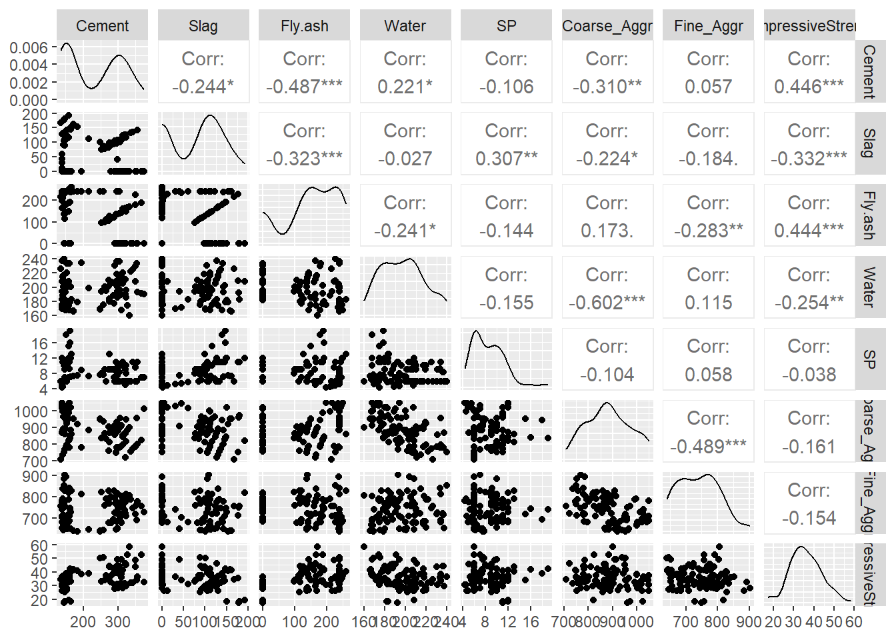
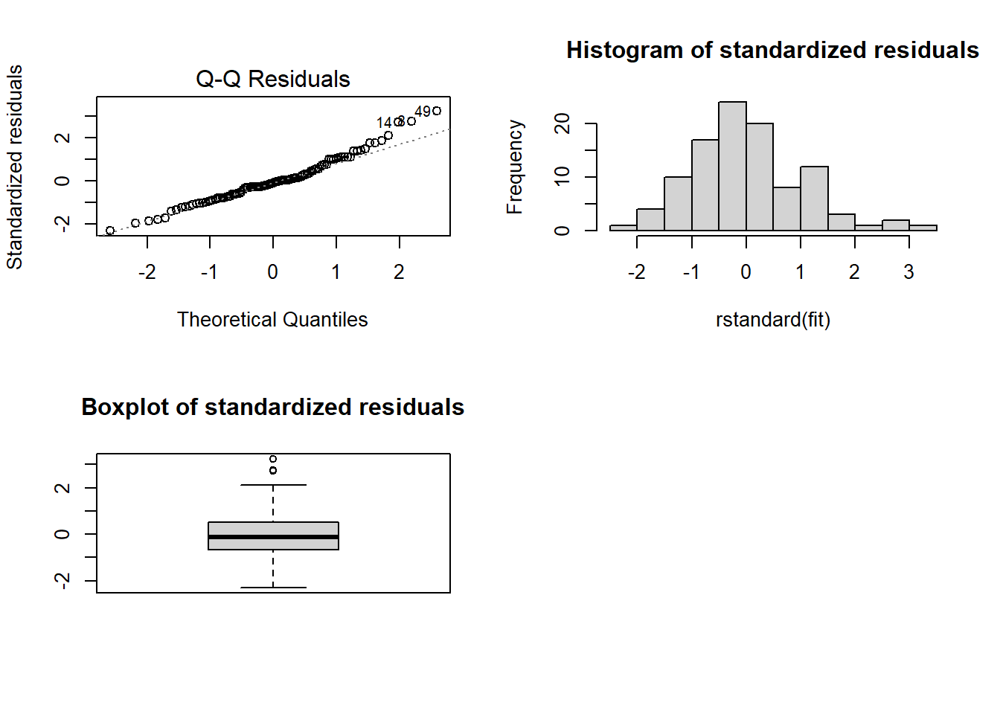
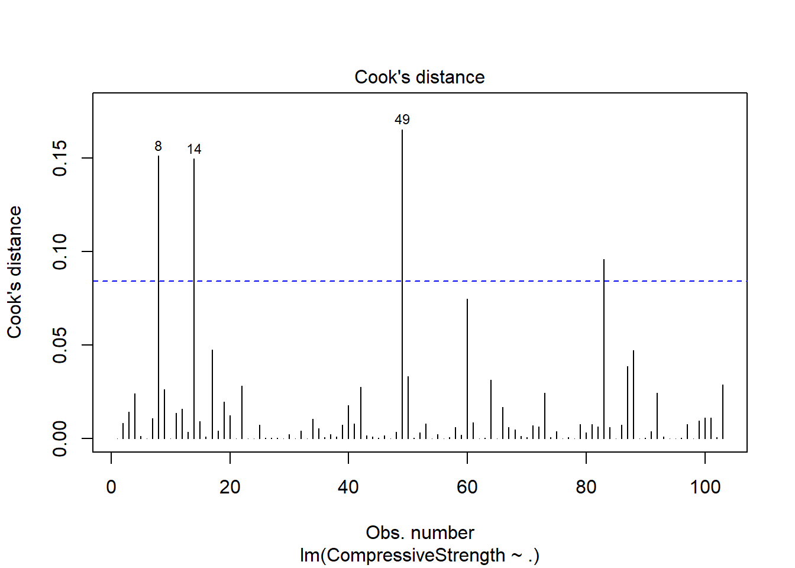
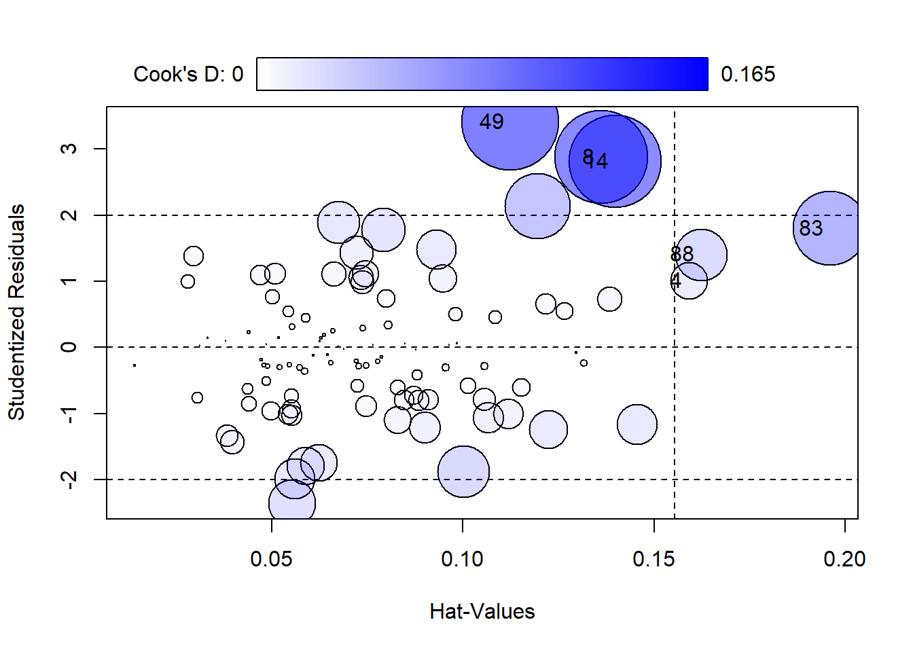
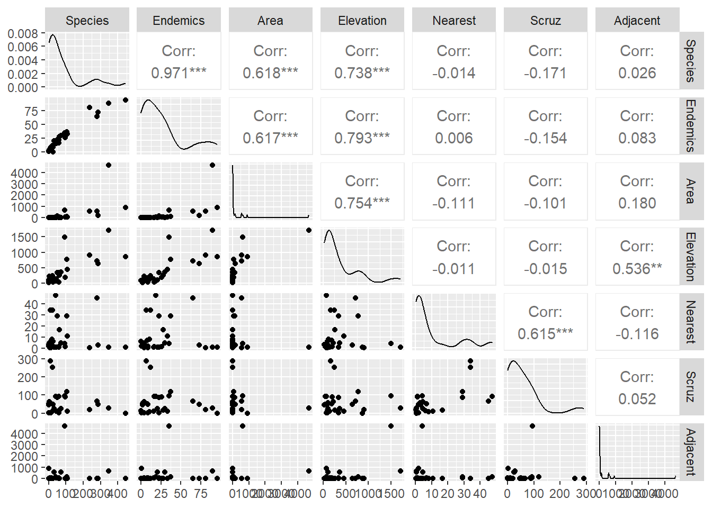

# install.packages('GGally', repos = "http://cran.us.r-project.org")
# install.packages("car", repos = "http://cran.us.r-project.org")
# install.packages("faraway", repos = "http://cran.us.r-project.org")
library(faraway)
library(GGally)
library(car)HW 2 Aidan Bugayong
1
data = read.csv("data/slumptest-1.csv", sep=",")
dim(data)[1] 103 8head(data) Cement Slag Fly.ash Water SP Coarse_Aggr Fine_Aggr CompressiveStrength
1 273 82 105 210 9 904 680 34.99
2 163 149 191 180 12 843 746 41.14
3 162 148 191 179 16 840 743 41.81
4 162 148 190 179 19 838 741 42.08
5 154 112 144 220 10 923 658 26.82
6 147 89 115 202 9 860 829 25.21ggpairs(data)
fit <- lm(CompressiveStrength ~ ., data=data)
summary(fit)
Call:
lm(formula = CompressiveStrength ~ ., data = data)
Residuals:
Min 1Q Median 3Q Max
-5.8411 -1.7063 -0.2831 1.2986 7.9424
Coefficients:
Estimate Std. Error t value Pr(>|t|)
(Intercept) 139.78150 71.10128 1.966 0.05222 .
Cement 0.06141 0.02282 2.691 0.00842 **
Slag -0.02971 0.03176 -0.935 0.35200
Fly.ash 0.05053 0.02316 2.182 0.03159 *
Water -0.23270 0.07166 -3.247 0.00161 **
SP 0.10315 0.13459 0.766 0.44532
Coarse_Aggr -0.05562 0.02744 -2.027 0.04546 *
Fine_Aggr -0.03908 0.02882 -1.356 0.17833
---
Signif. codes: 0 '***' 0.001 '**' 0.01 '*' 0.05 '.' 0.1 ' ' 1
Residual standard error: 2.609 on 95 degrees of freedom
Multiple R-squared: 0.8968, Adjusted R-squared: 0.8892
F-statistic: 118 on 7 and 95 DF, p-value: < 2.2e-16i
According to the above summary, coarse aggregate has a p-value of \(0.04546\) which is less than \(\alpha =0.05\) so we can say that coarse aggregate is a statistically significant predictor.
ii
## Compute the residuals
std_resid <- fit$residuals
par(mfrow=c(2,2))
plot(fit, which=2)
hist(rstandard(fit), main="Histogram of standardized residuals")
boxplot(rstandard(fit), main="Boxplot of standardized residuals")
## Shapiro-Wilk's test
shapiro.test(std_resid)
Shapiro-Wilk normality test
data: std_resid
W = 0.97486, p-value = 0.0467
Here the p-value is \(0.0467\) which is less than \(\alpha =0.05\) so we reject and thus the data is not normally distributed.
iii
## Cook's distance
D <- cooks.distance(lm(fit))
cutoff1 <- qf(0.5, 8, df.residual(fit))
print(cutoff1)[1] 0.9245399cutoff2 <- 8/df.residual(fit)
cutoff3 <- 0.5
plot(fit, which=4)
abline(h=cutoff1, lty=2, col="black")
abline(h=cutoff2, lty=2, col="blue")
abline(h=cutoff3, lty=2, col="red3")
influencePlot(fit, id=list(n=3))
StudRes Hat CookD
4 1.007598 0.1590495 0.02399811
8 2.873893 0.1361820 0.15120617
14 2.811296 0.1397976 0.14967778
49 3.407478 0.1124498 0.16540816
83 1.795464 0.1961051 0.09605162
88 1.403472 0.1623378 0.04723434There are quite a few outliers in the data. These being entries \(8,14,49\) and they are not influential because their cook distances are below the cutoff 1 of \(~0.925\)
iv
data_no_outliers <- data[-c(8, 14, 49), ]
fit2 <- lm(CompressiveStrength ~ ., data = data_no_outliers)
summary(fit)
Call:
lm(formula = CompressiveStrength ~ ., data = data)
Residuals:
Min 1Q Median 3Q Max
-5.8411 -1.7063 -0.2831 1.2986 7.9424
Coefficients:
Estimate Std. Error t value Pr(>|t|)
(Intercept) 139.78150 71.10128 1.966 0.05222 .
Cement 0.06141 0.02282 2.691 0.00842 **
Slag -0.02971 0.03176 -0.935 0.35200
Fly.ash 0.05053 0.02316 2.182 0.03159 *
Water -0.23270 0.07166 -3.247 0.00161 **
SP 0.10315 0.13459 0.766 0.44532
Coarse_Aggr -0.05562 0.02744 -2.027 0.04546 *
Fine_Aggr -0.03908 0.02882 -1.356 0.17833
---
Signif. codes: 0 '***' 0.001 '**' 0.01 '*' 0.05 '.' 0.1 ' ' 1
Residual standard error: 2.609 on 95 degrees of freedom
Multiple R-squared: 0.8968, Adjusted R-squared: 0.8892
F-statistic: 118 on 7 and 95 DF, p-value: < 2.2e-16summary(fit2)
Call:
lm(formula = CompressiveStrength ~ ., data = data_no_outliers)
Residuals:
Min 1Q Median 3Q Max
-5.8661 -1.3657 -0.1508 1.3244 5.4743
Coefficients:
Estimate Std. Error t value Pr(>|t|)
(Intercept) 103.520083 62.382326 1.659 0.100431
Cement 0.073248 0.020055 3.652 0.000432 ***
Slag -0.008788 0.027953 -0.314 0.753945
Fly.ash 0.063659 0.020323 3.132 0.002326 **
Water -0.200126 0.063029 -3.175 0.002038 **
SP 0.198984 0.118788 1.675 0.097307 .
Coarse_Aggr -0.041415 0.024103 -1.718 0.089112 .
Fine_Aggr -0.025668 0.025241 -1.017 0.311858
---
Signif. codes: 0 '***' 0.001 '**' 0.01 '*' 0.05 '.' 0.1 ' ' 1
Residual standard error: 2.274 on 92 degrees of freedom
Multiple R-squared: 0.9173, Adjusted R-squared: 0.911
F-statistic: 145.7 on 7 and 92 DF, p-value: < 2.2e-16First there is a vast decrease in the intercept from fit1 to fit2. This was compensated by all the other coeffeciants increasing by \(~0.01-0.02\). More importantly are the p-values where cement and fly.ash both gained a \(*\) (indicating an increase in statistical significance) while coarse aggregate actually decreased in significance.
2
data(gala)
dim(gala)[1] 30 7head(gala) Species Endemics Area Elevation Nearest Scruz Adjacent
Baltra 58 23 25.09 346 0.6 0.6 1.84
Bartolome 31 21 1.24 109 0.6 26.3 572.33
Caldwell 3 3 0.21 114 2.8 58.7 0.78
Champion 25 9 0.10 46 1.9 47.4 0.18
Coamano 2 1 0.05 77 1.9 1.9 903.82
Daphne.Major 18 11 0.34 119 8.0 8.0 1.84ggpairs(gala)
fit3 = lm(Species ~ ., data = gala)
summary(fit3)
Call:
lm(formula = Species ~ ., data = gala)
Residuals:
Min 1Q Median 3Q Max
-68.219 -10.225 1.830 9.557 71.090
Coefficients:
Estimate Std. Error t value Pr(>|t|)
(Intercept) -15.337942 9.423550 -1.628 0.117
Endemics 4.393654 0.481203 9.131 4.13e-09 ***
Area 0.013258 0.011403 1.163 0.257
Elevation -0.047537 0.047596 -0.999 0.328
Nearest -0.101460 0.500871 -0.203 0.841
Scruz 0.008256 0.105884 0.078 0.939
Adjacent 0.001811 0.011879 0.152 0.880
---
Signif. codes: 0 '***' 0.001 '**' 0.01 '*' 0.05 '.' 0.1 ' ' 1
Residual standard error: 28.96 on 23 degrees of freedom
Multiple R-squared: 0.9494, Adjusted R-squared: 0.9362
F-statistic: 71.88 on 6 and 23 DF, p-value: 9.674e-14i
null_fit = lm(Species ~ 1, data = gala)
anova(fit3, null_fit, test="F")Analysis of Variance Table
Model 1: Species ~ Endemics + Area + Elevation + Nearest + Scruz + Adjacent
Model 2: Species ~ 1
Res.Df RSS Df Sum of Sq F Pr(>F)
1 23 19295
2 29 381081 -6 -361787 71.877 9.674e-14 ***
---
Signif. codes: 0 '***' 0.001 '**' 0.01 '*' 0.05 '.' 0.1 ' ' 1We notice from the anova table that the p-value is much smaller than \(\alpha = 0.05\) thus our model is useful.
ii
From the summary we note that the adjusted \(R^2\) is \(0.9362\) which means that \(93.62%\) of the variance of Species is explained by our predictors.
iii
vif(fit3) Endemics Area Elevation Nearest Scruz Adjacent
5.979425 3.356530 13.920084 1.767133 1.793814 3.645582 Elevation has a vif above \(10\) so there is reason to believe multicollinearity is present.
iv
reduced_model <- lm(Species ~ Area + Elevation, data = gala)
anova(reduced_model, fit3)Analysis of Variance Table
Model 1: Species ~ Area + Elevation
Model 2: Species ~ Endemics + Area + Elevation + Nearest + Scruz + Adjacent
Res.Df RSS Df Sum of Sq F Pr(>F)
1 27 169947
2 23 19295 4 150652 44.896 1.524e-10 ***
---
Signif. codes: 0 '***' 0.001 '**' 0.01 '*' 0.05 '.' 0.1 ' ' 1The claim is fallse because the p-value is less than \(\alpha=0.01\) so we reject the null hypothesis thus the predictors are useful.
v
ncvTest(reduced_model)Non-constant Variance Score Test
Variance formula: ~ fitted.values
Chisquare = 21.09394, Df = 1, p = 4.3731e-06Since the p-value is less than \(\alpha=0.05\) the constant variance assumption is violated.